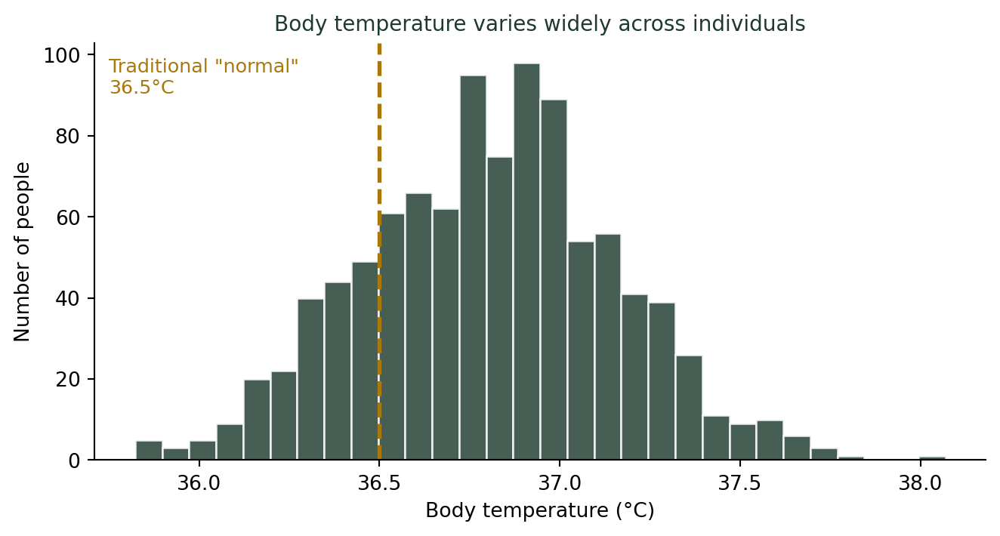
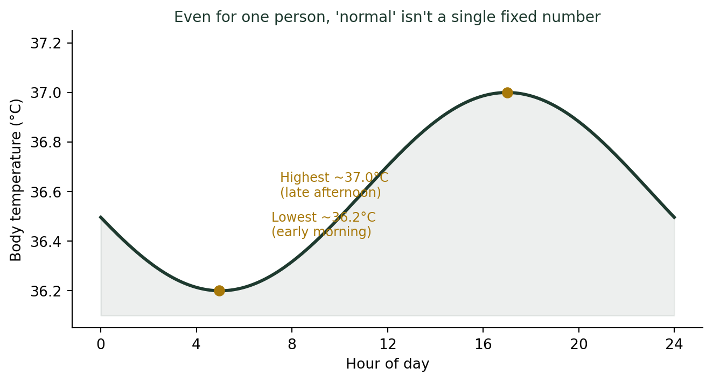

(숫자를 대표하는 방법) 내 체온 36.5도는 정말 정상인가?
통계기초
기술통계
’정상 체온 36.5도’라는 상식은 어디서 왔을까? 평균이 한 사람 한 사람을 대표하지 못하는 이유를 체온으로 들여다봅니다.
체온계가 36.8도를 가리켰다
몸이 좀 으슬으슬한 것 같아 체온계를 꺼냈다. 36.8도. 어? 정상 체온은 36.5도라고 배웠는데, 벌써 미열인가?
코로나 시기, 건물 입구마다 체온계를 들이대던 때가 있었다. 그때 나는 매번 궁금했다. “36.5도”라는 저 기준선, 대체 누가 정한 걸까? 주변에 물어보면 다들 “36.5도가 정상”이라고 대답한다. 병원 안내문에도, 초등학교 보건 교과서에도 이 숫자가 적혀 있다. 그런데 이 36.5도라는 숫자, 어디서 왔고 얼마나 믿을 만한 걸까?
“정상 체온”이라는 숫자의 기원
이 숫자의 뿌리는 무려 1851년으로 거슬러 올라간다. 독일 의사 카를 분덜리히(Carl Wunderlich)가 약 25,000명의 환자를 대상으로 겨드랑이 체온을 100만 번 넘게 측정한 뒤, 평균값을 37.0°C(98.6°F)로 발표했다. 이후 100년 넘게 이 숫자가 “정상 체온”의 표준으로 굳어졌다.
평균 하나로 100년을 지배한 숫자
분덜리히의 연구는 당시로서는 획기적인 대규모 조사였다. 그러나 여기서 발표된 것은 집단 전체의 평균값 하나였을 뿐, 사람마다 체온이 얼마나 다른지에 대한 정보는 크게 주목받지 못했다.
“평균이 37도다”라는 문장과 “정상 체온은 37도여야 한다”는 문장은 전혀 다른 주장이다. 그런데 오랫동안 이 둘은 같은 말처럼 취급되었다.
평균은 한 사람 한 사람을 대표하지 못한다
1992년, 미국 메릴랜드 의과대학의 필립 마코와이악(Philip Mackowiak) 연구팀이 현대적인 방법으로 148명의 체온을 다시 측정했다. 결과는 평균 36.8°C(98.2°C)로 분덜리히의 값보다 약간 낮았고, 무엇보다 중요한 발견은 따로 있었다. 개인차가 생각보다 훨씬 컸다는 것이다.
평균 체온에 영향을 주는 요인들
| 요인 | 체온에 미치는 영향 |
|---|---|
| 나이 | 나이가 들수록 평균 체온은 조금씩 낮아지는 경향 |
| 성별 | 여성은 생리주기에 따라 최대 0.5°C까지 변동 |
| 측정 부위 | 겨드랑이 < 구강 < 직장·고막 순으로 높게 측정됨 |
| 측정 시간대 | 하루 중 시간에 따라서도 체온은 계속 변한다 (아래 참고) |
| 활동량·식사 | 운동 직후, 식사 직후에는 일시적으로 상승 |
한 사람의 “정상 체온”이 다른 사람의 “정상 체온”과 0.5~1°C 이상 차이 나는 것은 전혀 이상한 일이 아니다.
더 깊이: 산포를 재는 법
체온이 사람마다 “얼마나 다른지”를 정량화하는 도구가 표준편차다. 강의노트 〈기초통계 2. 데이터와 통계 — 측정형 데이터〉에는 분산·표준편차의 정의와 함께, 히스토그램으로 분포 모양을 확인하는 방법이 정리되어 있다. 이 글의 체온 분포 그래프도 같은 방식으로 그린 것이다.
하루 중에도 체온은 계속 변한다
개인차만 문제가 아니다. 같은 사람이라도 하루 중 시간에 따라 체온은 규칙적으로 오르내린다. 이를 생체리듬(circadian rhythm)이라 부른다. 보통 새벽에 가장 낮고, 늦은 오후에서 초저녁 사이에 가장 높다.

같은 사람이 새벽에 재면 36.2도, 저녁에 재면 36.9도가 나올 수 있다. 두 숫자 모두 “정상”이다. 문제는 우리가 단 하나의 기준선(36.5도)과만 비교하려 한다는 데 있다.
그렇다면 무엇을 봐야 하는가
체온을 통계적으로 해석하는 법
- 절대 기준보다 나의 평소 체온을 알아두자. 며칠간 같은 시간대에 재본 나의 평균값이, 교과서 속 36.5도보다 훨씬 믿을 만한 기준이다.
- 비교는 같은 조건끼리. 아침 체온은 아침 체온끼리, 겨드랑이 측정은 겨드랑이 측정끼리 비교해야 의미가 있다.
- 평소보다 얼마나 올랐는지가 중요하다. 평소 36.2도인 사람의 36.8도는, 평소 36.8도인 사람의 36.8도와 전혀 다른 의미를 가진다.
- 하나의 숫자보다 범위로 생각하자. “정상 체온은 36.5도”가 아니라 “정상 체온은 대략 36.1~37.2도 사이, 그리고 그 안에서도 사람마다 다르다”가 통계적으로 더 정확한 문장이다.
결론: 평균은 참고치일 뿐, 기준은 나 자신이다
분덜리히가 남긴 37도, 그리고 이후 굳어진 36.5도는 어디까지나 집단의 평균이다. 평균은 유용한 참고점이지만, 그 자체로 “정상과 비정상을 가르는 절대선”은 될 수 없다.
체온계 숫자에 놀라기 전에 먼저 물어야 할 것은 “이 숫자가 교과서 속 평균과 얼마나 다른가”가 아니라, “내 평소 체온과 비교했을 때 얼마나 달라졌는가”다. 통계학이 알려주는 가장 실용적인 교훈 중 하나는, 평균 뒤에 숨어 있는 개인차를 먼저 들여다보라는 것이다.
나는 요즘도 체온계 숫자를 볼 때마다 그 시절 건물 입구의 발열 체크대를 떠올린다. 그 하나의 기준선(37.5도)을 넘었는지 아닌지로 출입이 갈리던 그 순간에도, 사실 우리는 모두 조금씩 다른 “평소 체온”을 갖고 있었다.